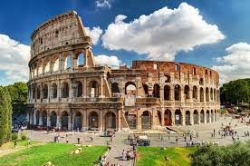
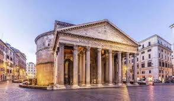

ROMA
Ecco a voi alcuni posti da visitare a Roma
- Il Colosseo, originariamente conosciuto come Anfiteatro Flavio (in latino Amphitheatrum Flavium) o semplicemente Amphitheatrum (in italiano: Anfiteatro), è il più grande anfiteatro romano del mondo (in grado di contenere un numero di spettatori stimato tra 50 000 e 87 000), situato nel centro della città di Roma. È il più importante anfiteatro romano, nonché il più imponente monumento dell'antica Roma che sia giunto fino a noi.
Inserito nel 1980 nella lista dei Patrimoni dell'umanità dell'UNESCO - insieme all'intero Centro storico di Roma, alle Zone extraterritoriali della Santa Sede in Italia e alla Basilica di San Paolo fuori le mura - nel 2007, unico monumento europeo, è stato anche inserito fra le Nuove sette meraviglie del mondo a seguito di un concorso organizzato da New Open World Corporation (NOWC).
L'anfiteatro fu edificato in epoca flavia su un'area al limite orientale del Foro Romano. La sua costruzione, iniziata da Vespasiano nel 70 d.C., fu conclusa da Tito, che lo inaugurò il 21 aprile nell'80 d.C. Ulteriori modifiche vennero apportate durante l'impero di Domiziano, nel 90 d.C.
L'edificio forma un ovale policentrico di 527 m di perimetro, con assi che misurano 187,5 e 156,5 m. L'arena all'interno misura 86 × 54 m, con una superficie di 3357 m². L'altezza attuale raggiunge 48 m, ma originariamente arrivava a 52 m. La struttura esprime con chiarezza le concezioni architettoniche e costruttive romane della prima Età imperiale, basate rispettivamente sulla linea curva e avvolgente offerta dalla pianta ellittica e sulla complessità dei sistemi costruttivi. Archi e volte sono concatenati tra loro in un serrato rapporto strutturale.
Il nome "Colosseo" si diffuse solo nel Medioevo, e deriva dalla deformazione popolare dell'aggettivo latino "colosseum" (traducibile in "colossale", come appariva nell'Alto Medioevo tra le casette a uno o due piani) o, più probabilmente, dalla vicinanza della colossale statua acrolitica di Nerone che sorgeva nei pressi. Presto l'edificio divenne simbolo della città imperiale, espressione di un'ideologia in cui la volontà celebrativa giunge a definire modelli per lo svago e il divertimento del popolo.
Anticamente era usato per gli spettacoli dei gladiatori e altre manifestazioni pubbliche (spettacoli di caccia, battaglie navali, rievocazioni di battaglie famose e drammi basati sulla mitologia classica). La tradizione che lo vuole luogo di martirio di cristiani è infondata. Non più in uso dopo il VI secolo, l'enorme struttura venne riutilizzata nei secoli, anche come cava di materiale. Oggi è un simbolo della città di Roma e una delle maggiori attrazioni turistiche sotto forma di monumento archeologico regolarmente visitabile.
Nel 2012 le condizioni della struttura del Colosseo destarono preoccupazione, in seguito a studi che avevano individuato oltre 3.000 lesioni e un esteso stato fessurativo. Inoltre venne rilevata un'inclinazione di 40 cm della struttura, probabilmente a causa di un cedimento della platea di fondazione su cui poggiava.

- Il Pantheon è un edificio della Roma antica situato nel rione Pigna nel centro storico, costruito come tempio dedicato a tutte le divinità passate, presenti e future. Fu fondato nel 27 a.C. da Marco Vipsanio Agrippa, genero di Augusto, che lo dedicò alla dea Cibele e a tutti gli dei. Fu fatto ricostruire dall'imperatore Adriano presumibilmente dal 112-115 fino al 124 d.C. circa, dopo che gli incendi dell'80 e del 110 d.C. avevano danneggiato la costruzione precedente di età augustea.
È composto da una struttura circolare unita a un pronao in colonne corinzie (otto frontali e due gruppi di quattro in seconda e terza fila) che sorreggono un frontone. La grande cella circolare, detta rotonda, è cinta da spesse pareti in muratura e da otto grandi piloni su cui è ripartito il peso della caratteristica cupola emisferica in calcestruzzo che ospita al suo apice un'apertura circolare detta oculo, il quale permette l'illuminazione dell'ambiente interno. L'altezza dell'edificio calcolata all'oculo è pari al diametro della rotonda, caratteristica che rispecchia i criteri classici di architettura equilibrata e armoniosa. A quasi due millenni dalla sua costruzione, la cupola intradossata del Pantheon è ancora oggi una delle cupole più grandi di tutto il mondo, e nello specifico la più grande costruita in calcestruzzo romano.
All'inizio del VII secolo il Pantheon venne donato dall'imperatore d'oriente Foca a papa Bonifacio IV e fu convertito in basilica cristiana chiamata Santa Maria della Rotonda[6] o Santa Maria ad Martyres, il che gli ha consentito di sopravvivere quasi integro alle spoliazioni patite dagli altri edifici della Roma classica. Gode del rango di basilica minore ed è l'unica basilica di Roma oltre a quelle patriarcali ad avere ancora un capitolo.[7] Gli abitanti di Roma lo chiamavano popolarmente la Rotonna ("la Rotonda"), da cui derivano anche il nome della piazza e della via antistanti.
Attualmente proprietà demaniale dello Stato italiano, dal dicembre 2014 il Ministero per i beni e le attività culturali lo ha gestito tramite il Polo museale del Lazio, e dal dicembre 2019 attraverso la Direzione Musei statali di Roma. Nel 2019 ha fatto registrare 8 955 569 visitatori, risultando il sito museale statale italiano più visitato.

torna alla HOME